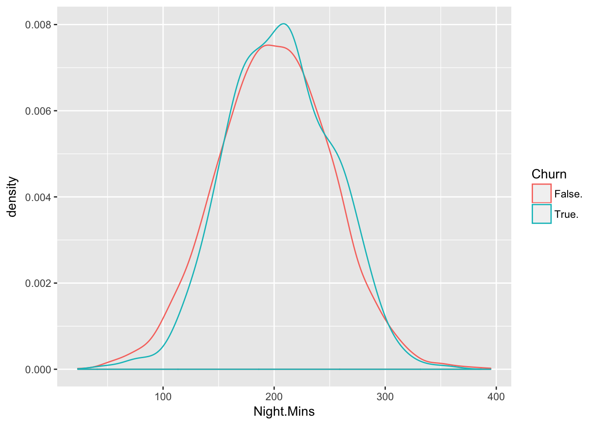
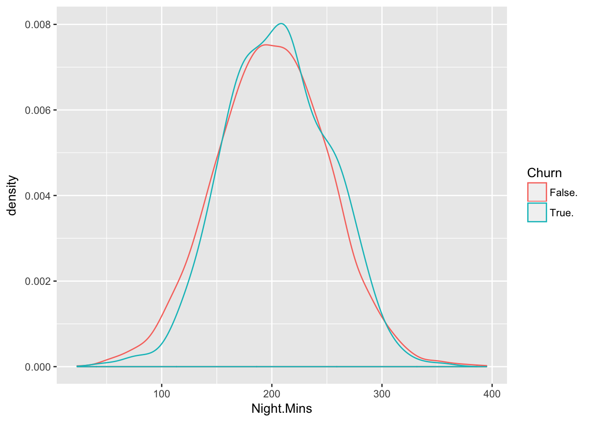

Analyse de résiliations
1 Introduction
Objectifs
Les objectifs d’une étude de rétention ou de résiliation peuvent être multiples:
- Scoring client
- Motifs de résiliation
- Types de résiliation (résiliation au terme, Hamon, Chatel)
Pour la prédition de probabilité de résiliation, il peut y avoir plusieurs utilités selon les durées de détection:
- Un mois: pour une durée de l’ordre du mois, le motif peut être la loi Hamon, et le résultat peut être utilisé par le marketing pour retenir le client
- Un an: le motif peut être la résiliation au terme. Le modèle peut être utilisé pour étudier les modèles de tarification: impact du tarif sur le taux de résiliation.
- Plusieurs années de suite: les probabilités de résiliation annuelles pour plusieurs années de suite peuvent servir pour un modèle de valeur client.
L’étude peut être enrichie avec
- Analyse de cohorte
- Analyse de saisonnalité
- Analyse de survie
- Valeur client
- Données externes démographiques et text mining
2 Variables
Les variables peuvent être de plusieurs catégories:
- Données contractuelles
- Durée de souscription
- Type de produit (garanties, changements)
- Type de couverture
- Méthodes de paiement
- Canal de distribution
- Montants de primes
- Franchises (par garantie)
- Données démographiques
- Age, sexe, statut marital
- Enfants
- Adresse (et informations du quartier)
- Type d’appartement et durée
- Niveau de revenu
- Données sinistres
- Montants payés
- Prestataire
- Assistance
- Données de contact
- Fréquence de prise en contact et modes
- Résolution et temps de résolution
3 Exploration
Des graphiques pour mieux comprendre les données:
 

4 Segmentation
5 Prédiction
Les objectifs pour une prédiction peuvent être multiples aussi. Prenons un exemple de problématique: détecter les résiliations durant l’année N+1 sur le portefeuille donné. Il est possible de calculer un score par contrat. L’algorithme utilisé peut être la régression logistique.
Objectif:
- Comme un score particuler par contrat est calculé, l’objectif peut il être de proposer une action pour retenir le client? Si oui, la valeur client est certainement nécessaire afin d’optimiser la rentabilité, et non pas uniquement le taux de rétention.
- Un autre objectif peut être de comprendre le comportement des clients, mais le clustering peut être plus adapté.
- Sinon, il est possible d’étudier l’impact des prix: en applicant un modèle de tarification, il est alors possible de calculer le taux de résiliation avant et après.
Pour construire l’algorithme, la base d’apprentissage peut être le portefeuille vu au 31/12/N, avec toutes les résilations qui ont eu lieu aurant l’année N. (Il est également possible de prendre en compte plusieurs années de contrats, en supposant que le portefeuille est homogène d’une année à l’autre.) Si l’algorithme est uniquement appliqué au portefeuille actuel, il n’est pas nécessaire de prendre en compte les nouvelles affaires de l’année N, comme il n’y aura d’affaires nouvelles dans la base de validation (qui est le portefeuille actuel vu au 31/12/N+1).
Certaines variables sont invariantes au cours du temps (comme l’adresse, le sexe, le bien assuré), d’autres variables changent au cours du temps:
- l’âge du contrat (temps en portefeuille)
- prime
- sinistres
- nombres de prises en contact
Ainsi, ces variables qui auront changé au cours du temps pourront nous permettre de prédire le potentiel de résiliation.
Dans la construction concrète de l’algorithme, plusieurs paramètres peuvent impacter sa qualité de prédiction
- variables: si les variables importantes ne sont pas présentes, par exemple, le niveau de revenu
- temps: selon qu’on prédit les résiliations dans un an ou un mois
- cohorte: dans le cas particulier d’une campagne marketing, les clients qui ont souscrit via une offre promotionnelle peuvent avoir plus tendance à résilier (à distinguer des autres)
6 Variables explicatives
En utilisant des algorithmes, il est possible d’identifier les variables qui expliquent les causes de résiliations. L’étude peut être réalisée selon plusieurs segmentations bien sûr.
Copyright © 2016 Kezhan SHI